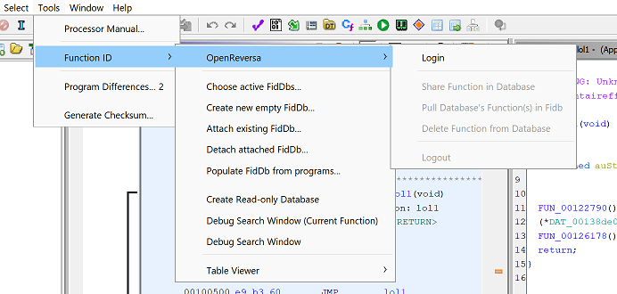
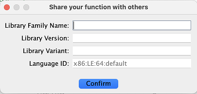
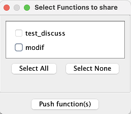
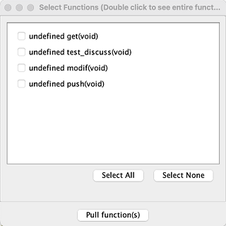

OpenReversa is a collaborative Function identification tool for Ghidra.
The OpenReversa feature allows each user to collaborate easily by sharing
function IDs with the community via a shared database that feeds users' .fidb files.
It uses Ghidra's FunctionID plugin to recognize well-known function signatures
based on their binary format.
Once researchers have identified a function in Ghidra, they can share it using the OpenReversa plugin, thus increasing the collaborative database.
For source code or installation steps, please see the Github repository
Menus actions can be accessed through Tools->FunctionID->OpenReversa

First, user needs to be authenticated to use the OpenReversa plugin. To do so, connect with "Login" button.
The first feature allows to add a found function to the shared database. This can be done using the "Share Function in Database" feature. A first window appears, prompting you to fill in the library information. And next, you can make a choice of functions to share. Once this has been done, simply click on "Push function(s)" and add a comment if desired.
 
If wanted, it is possible to extend the local database with new functions hash, For that, use the "Pull Database's Function(s) in Fidb" feature to retrieve functions that have been published by other users.

To do this, press the button and a list of published functions is displayed. It is then possible to select the function(s) of interest to feed our local fidb file.
If a user wants to get rid of the functions he published, he can choose the last menu entry called Delete Function from Database. This will allow the user to delete previously published functions from the database.
Provided by : Robin Paquet and Arnaud Delcorte based on the work of Zina Rasoamanana and Cyprien Janssens de Bisthoven.